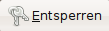
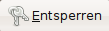

PolicyKit
Dieser Artikel wurde für die folgenden Ubuntu-Versionen getestet:
Ubuntu 14.04 Trusty Tahr
Artikel für fortgeschrittene Anwender
Dieser Artikel erfordert mehr Erfahrung im Umgang mit Linux und ist daher nur für fortgeschrittene Benutzer gedacht.
Zum Verständnis dieses Artikels sind folgende Seiten hilfreich:
Über PolicyKit  können Anwendungen mit Benutzerrechten gestartet und später mit root-Rechten versehen werden. PolicyKit wurde bereits in die Werkzeuge zur Systemverwaltung von GNOME integriert. Dies ist daran zu erkennen, dass bei vielen Anwendungen nicht mehr das Root-Passwort beim Start der Anwendung abgefragt wird, sondern dass die Anwendung durch einen Klick auf  freigeschaltet wird.
können Anwendungen mit Benutzerrechten gestartet und später mit root-Rechten versehen werden. PolicyKit wurde bereits in die Werkzeuge zur Systemverwaltung von GNOME integriert. Dies ist daran zu erkennen, dass bei vielen Anwendungen nicht mehr das Root-Passwort beim Start der Anwendung abgefragt wird, sondern dass die Anwendung durch einen Klick auf  freigeschaltet wird.
Mittels PolicyKit lassen sich Rechte fein verteilen. So kann man Benutzer bestimmen, denen bestimmte Aktionen erlaubt werden, für die normalerweise Root-Rechte notwendig wären, ohne sie zu Administratoren zu machen. Hintergründe und Details zur Implementierung von PolicyKit bietet die Dokumentation .
Achtung!
Mit Hilfe des PolicyKit lassen sich zwar zusätzliche Rechte für bestimmte Benutzer gezielt erteilen, so dass für diese Nutzer die Benutzung des Systems „komfortabler“ wird, allerdings kann das falsche oder zu großzügige Setzen von Rechten erhebliche Sicherheitsrisiken bedeuten, da manche Nutzer unter Umständen zu weitreichende (System-) Rechte haben!
Die neuere und aktuelle Version des PolicyKits ist mit dem Namen "PolicyKit-1" implementiert worden. Dadurch entfällt die grafische Oberfläche, die in der älteren Version noch enthalten war, und die Kommandozeilen-Befehle haben sich geändert.
Installation¶
Das PolicyKit ist in der Standardinstallation von Ubuntu und Xubuntu enthalten. Ansonsten kann es über das folgende Paket installiert werden [1]:
policykit-1-gnome
 mit apturl
mit apturl
Paketliste zum Kopieren:
sudo apt-get install policykit-1-gnome
sudo aptitude install policykit-1-gnome
Benutzung¶
Grundsätzlich lassen sich alle Aktionen des PolicyKit über das Terminal steuern. Die Konfigurationsdateien liegen unterhalb des Verzeichnisses /etc/polkit-1/. Dort können grundsätzlich auch eigene Konfigurationsdateien angelegt werden. Die Dateien beginnen immer mit einer Zahl und werden aufsteigend abgearbeitet. Eigene Dateien sollen immer eine höhere Nummer tragen als die höchste Systemdatei.
Die Aktionen, welche definieren, wer was wann darf, sind im Verzeichnis /usr/share/polkit-1/actions/ abgelegt. Dies sind XML-Dateien, die man mit einem normalen Editor [3] bearbeiten könnte. Dabei sollte man jedoch bedenken, dass die Dateien bei jeder Paketaktualisierung (Update) überschrieben werden, d.h. dass eigene Änderungen verlorengehen. Möchte man eigene Regeln anlegen, so macht man dies daher besser im Verzeichnis /var/lib/polkit-1/localauthority/50-local.d/. Der Dateiname der eigenen Regel spielt dabei keine Rolle, wichtig ist nur, dass die Datei die Endung .pkla (steht für "PolicyKit local authority") hat. Ein konkretes Beispiel findet sich im Artikel Energiesparmodi mit ACPI.
Es stehen aber auch verschiedene Programme zur Verfügung, mit denen diese Aufgabe komfortabler erledigt werden kann:
pkaction - Hiermit können Aktionen angezeigt, gesetzt und modifiziert werden
pkcheck - Hiermit kann geprüft werden, ob ein Prozess für eine bestimmte Aktion autorisiert ist
pkexec - Führt ein Programm mit den Rechten eines anderen Nutzers aus
Alle oben genannten Programme arbeiten nicht interaktiv, sondern ausschließlich mit Optionen. Eine gute Einführung bieten die Manpages zu den jeweiligen Programmen oder auch die Informationen auf der Projektseite vom PolicyKit.
Root-Rechte über PolicyKit¶
Wer einen Root-Account aktiviert hat (siehe Artikel sudo/Konfiguration) und bei sudo mit der targetpw Option eingestellt hat, dass das Root-Passwort statt wie sonst bei Ubuntu üblich das Benutzer-Passwort eingegeben werden muss, möchte dies auch für PolicyKit so haben. Das geht beispielsweise durch eine Konfigurationsdatei /etc/polkit-1/localauthority.conf.d/60-root.conf mit folgendem Inhalt:
[Configuration] AdminIdentities=unix-user:0
- Erstellt mit Inyoka
-
 2004 – 2017 ubuntuusers.de • Einige Rechte vorbehalten
2004 – 2017 ubuntuusers.de • Einige Rechte vorbehalten
Lizenz • Kontakt • Datenschutz • Impressum • Serverstatus -
Serverhousing gespendet von